No vull anar, aniré, no aniré. Ha estat una ximplesa confiar en no trobar bitllet a última hora. Renfe no es permet fallar a un vell client.
Divendres 6 de febrer de 2009 18:18.
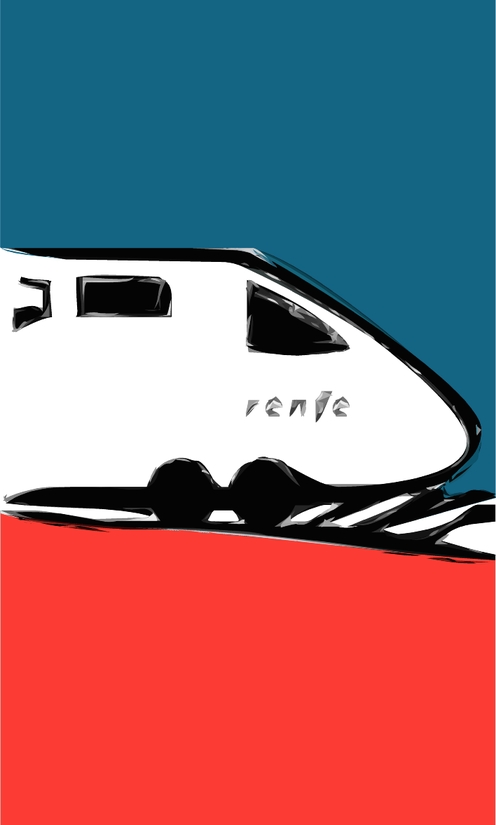
Publicat originalment en twitter.com/chbeauvoir en temps real entre el divendres 6 i el dissabte 7 de febrer de 2009.
No vull anar, aniré, no aniré. Ha estat una ximplesa confiar en no trobar bitllet a última hora. Renfe no es permet fallar a un vell client.
Divendres 6 de febrer de 2009 18:18.
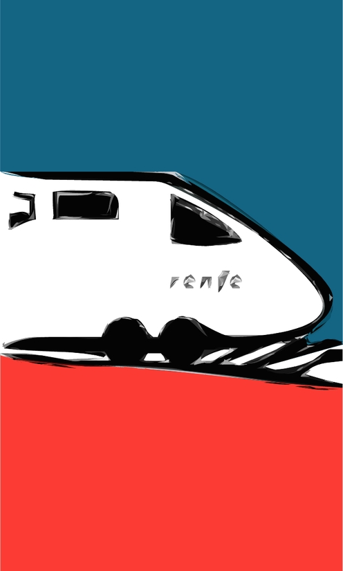
Com vol que li digui que no vull conversa, senyora? Seients enfrontats, redéu. On para el revisor? Doncs ara sí que m’està fotent, la Renfe.
Divendres 6 de febrer de 2009 19:14.
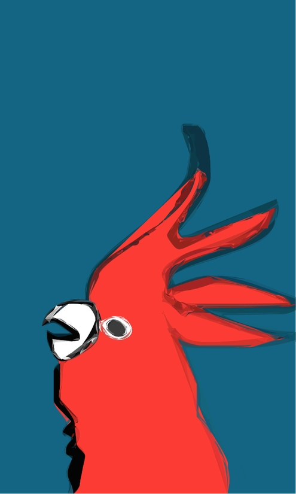
Entrem al túnel. Literal, però pareix una metàfora. Que la realitat de vegades es comporte simbòlicament vol dir alguna cosa? Segurament no.
Divendres 6 de febrer de 2009 20:06.
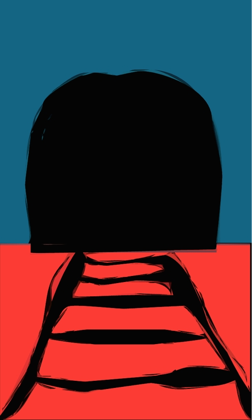
L’habitació: pulcra, còmoda, correcta. Un espai de trànsit. Una sala d’espera. No molt diferent del tanatori, supose. Us ho confirmaré demà.
Divendres 6 de febrer de 2009 21:05.
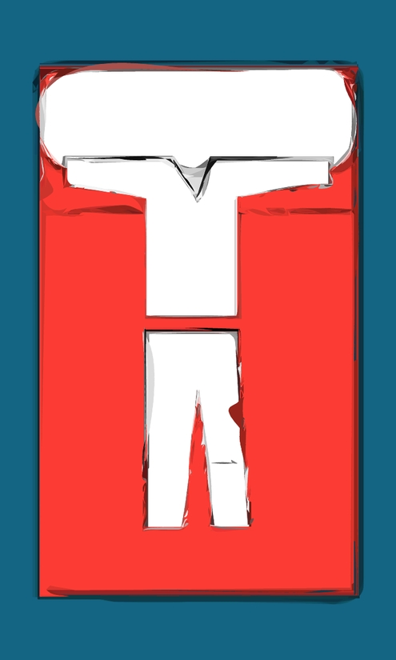
És una sensació estranya tornar a xafar aquests carrers. Però què em fa sentir tanta basarda exactament? En tot cas preferia arribar de nit.
Divendres 6 de febrer de 2009 22:03.
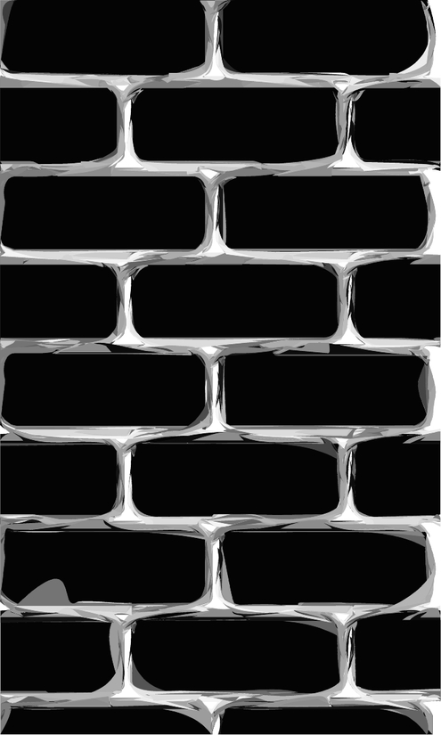
Un bon començament per a un conte, ara mateix. És el moment més dolç: la idea, el potencial, el projecte. Després ja sé que tot es complica.
Divendres 6 de febrer de 2009 23:01.
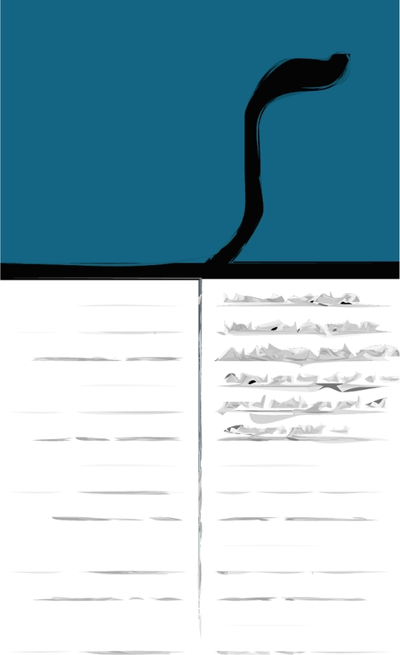
Four on Six. No sé què vol dir el nom però el cantant sobretot m’agrada. No sols les versions, les cançons seues també. Rythm & blues & gin.
Dissabte 7 de febrer de 2009 00:13.
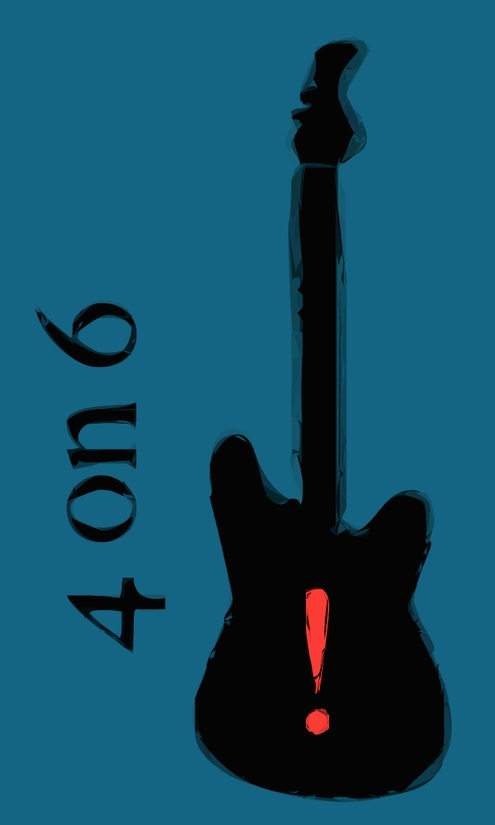
Una altra copa per dormir més bé. I un comentari estúpid a la noia de la barra que tot seguit em sap greu d’haver fet. Bocamoll, poca traça.
Dissabte 7 de febrer de 2009 01:00.
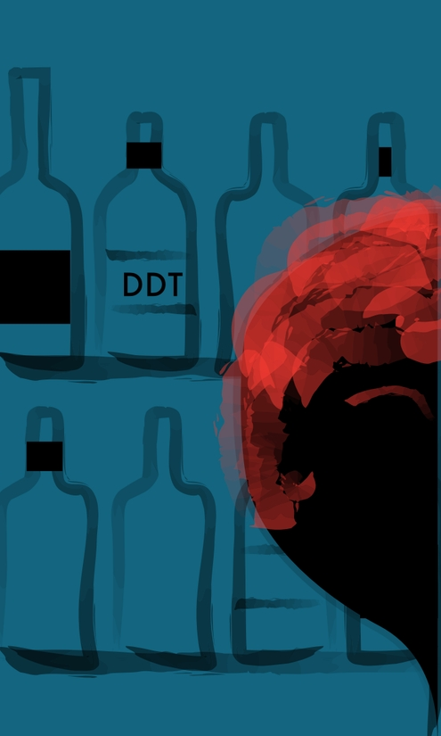
El bar de l’hotel és depriment. El minibar de l’habitació pareix una alternativa molt adequada. Ambient agradable, companyia ideal. Anem-hi.
Dissabte 7 de febrer de 2009 02:05.
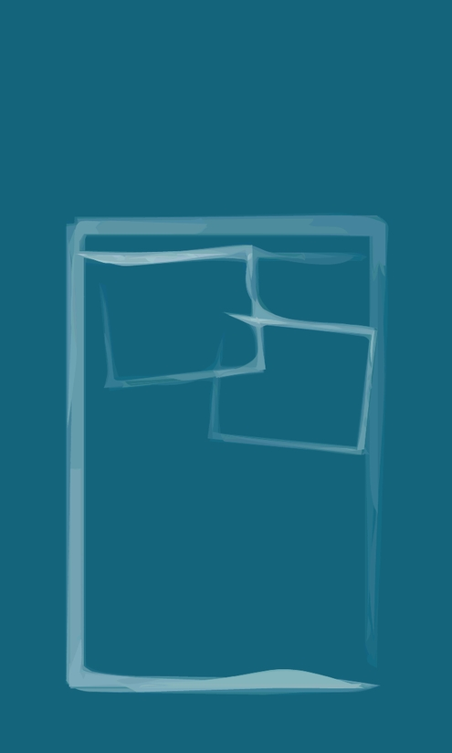
Jim Carrey, safareig i televenda. Jo aquesta nit programaria El setè segell o alguna més antiga de Murnau o de Fritz Lang. Que em sent algú?
Dissabte 7 de febrer de 2009 03:11.
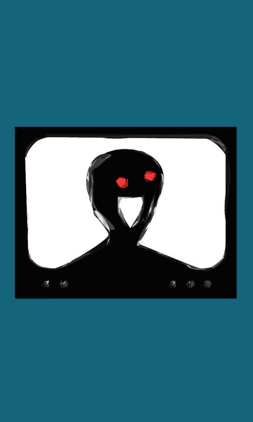
T’estime, Heléna. Vull que ho sàpiga tothom i que ho sàpigues tu també, és clar. Tu vas salvar aquest pobre tonto borratxo que no et mereix.
Dissabte 7 de febrer de 2009 04:07.
1/3 Borges 1/3 Vian 1/3 Beauvoir. No diré que serà un conte genial però sí sorprenent, gosat. Que sigui bo només depèn de mi, de l’execució.
Dissabte 7 de febrer de 2009 05:04.
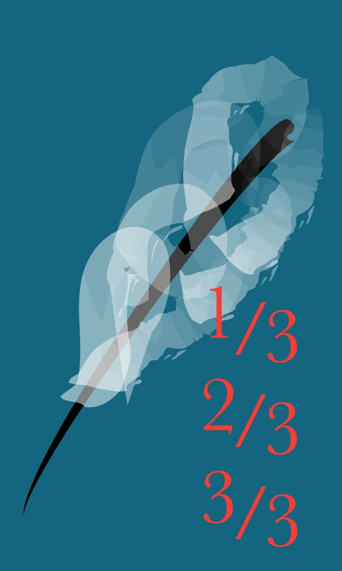
Llegisc la Bíblia en l’iPhone. Res nou sota el sol. Teniu ulls i no hi veieu. Si no es fa de dia aviat em podria convertir. Que Déu m’ajude.
Dissabte 7 de febrer de 2009 06:13.
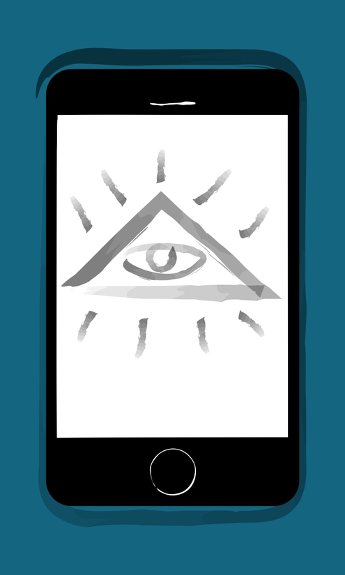
Quan aclucava per fi els ulls s’ha engegat la salmòdia habitual del despertador. Guerres, propaganda, histèria, refilets. Sempre passa així.
Dissabte 7 de febrer de 2009 07:07.
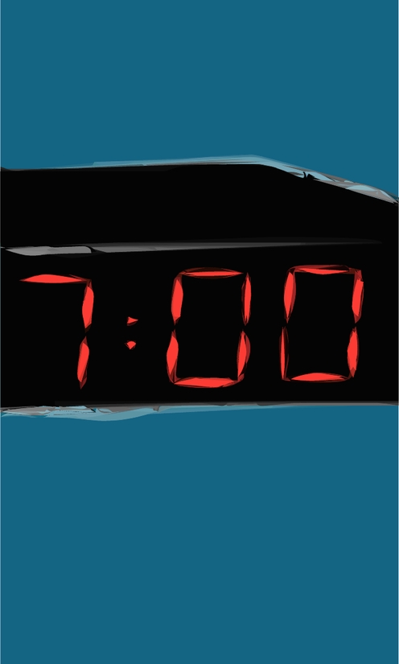
Bufet per combatre els estralls de l’insomni. Però no tinc migranya. Per què uns altres dies dormint 4 o 5 hores el cap m’explota i avui no?
Dissabte 7 de febrer de 2009 08:08.
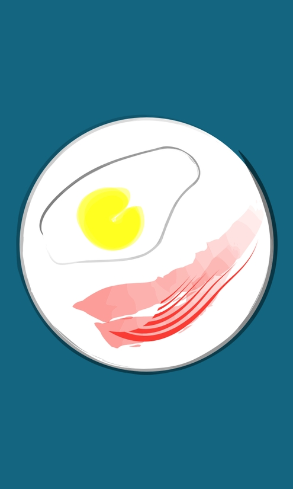
Plaça del Reial, Porta del Sol, la Pau, carrer Major, Enmig, Porta del Sol. Però per més voltes que dónes el final del camí t’espera a prop.
Dissabte 7 de febrer de 2009 09:13.
Gairebé no reconeixia el mort i els vius no em reconeixien a mi.
Dissabte 7 de febrer de 2009 10:04.
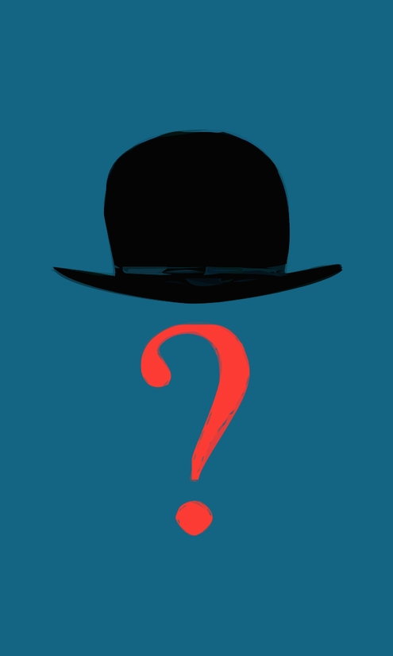
A les 12 en una llibreria(?) del c/Sant Vicent. Melcior ha fet, crec, com si no haguérem deixat de veure’ns, com si no hagueren passat anys.
Dissabte 7 de febrer de 2009 11:02.
Ah, també és cafeteria. No crec que tarde, si ha pogut deixar en bones mans sa mare i s’ha desempallegat dels voltors. Donaré un colp d’ull.
Dissabte 7 de febrer de 2009 12:12.
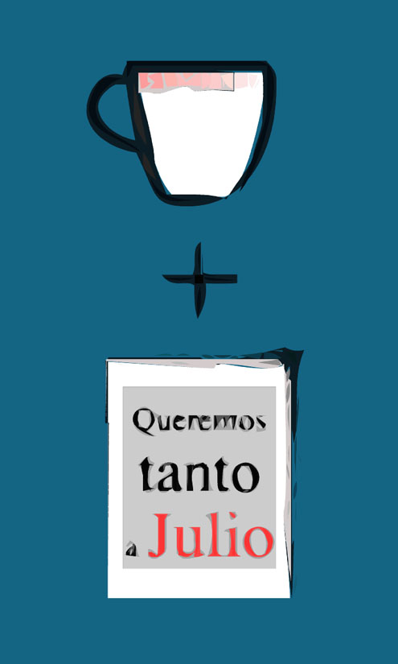
L’avantatge amb Melcior és que tu no cal que òbrigues la boca. Ell au vinga xarrar i tu assenteixes o t’arronses d’espatles de tant en tant.
Dissabte 7 de febrer de 2009 13:06.
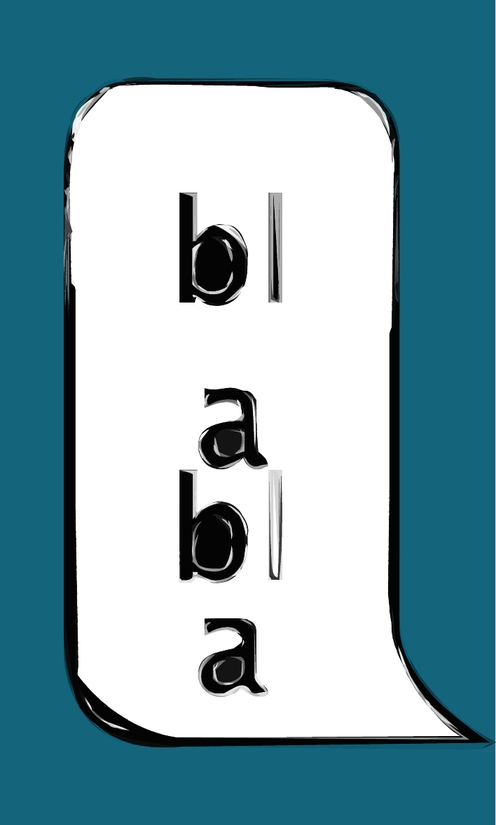
Pensava dinar al Grau però Melcioret, ploramiques, m’ha tret la gana. A canvi dos whiskys dobles. No és que li falte raó: ens fem tan vells.
Dissabte 7 de febrer de 2009 14:02.
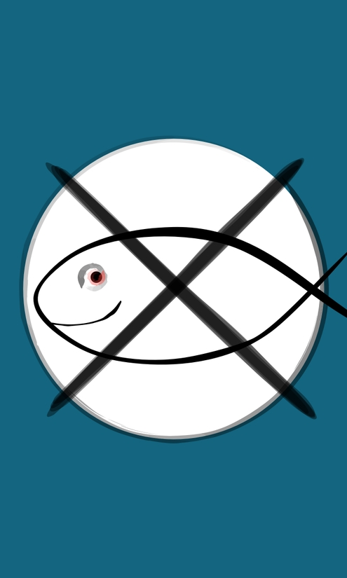
Un home m’ha demanat diners a l’estació. No li n’he donat i m’ha maleït en búlgar. O s’ha lamentat d’haver nascut, o ha citat Marx o Keynes.
Dissabte 7 de febrer de 2009 15:10.
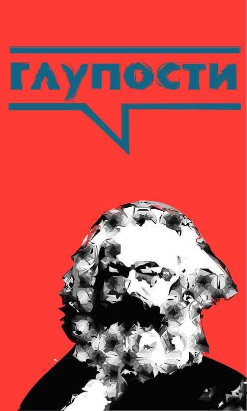
Viure i deixar de viure. L’existència, est ailleurs. Quantes vegades dec haver usat aquesta frase de Breton? M’avorrisc -molt- de mi mateix.
Dissabte 7 de febrer de 2009 16:12.
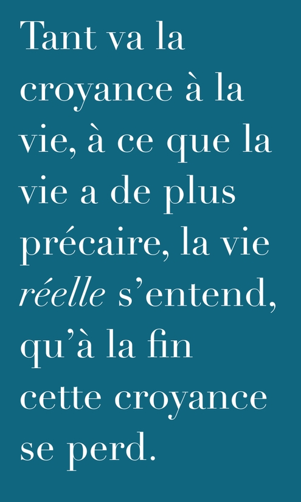
@H Del conte aquell d’anit millor que no me’n preguntessis res: una banalitat sense gens de gràcia. Acabe d’estripar el full de la llibreta.
Dissabte 7 de febrer de 2009 17:06.
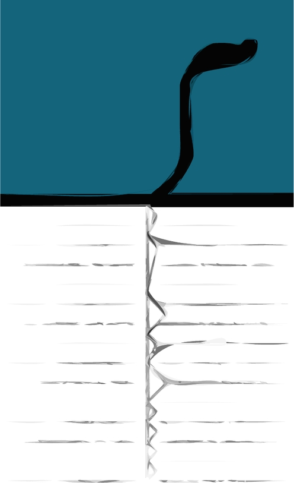
A casa una tendra forta abraçada i cafè calent per a dos. Durant un moment ha estat com si no me n’haguera anat mai i no haguera passat res.
Dissabte 7 de febrer de 2009 18:02.
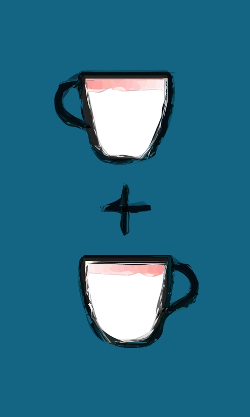
Copyright 2009, 2013 Carles Bellver Torlà (text & pictures)
Aquesta obra està subjecta a una llicència Reconeixement-No comercial-Sense obres derivades 3.0 Espanya de Creative Commons. Per veure’n una còpia, visiteu creativecommons.org/licenses/by-nc-nd/3.0/es/ o envieu una carta a Creative Commons, 171 Second Street, Suite 300, San Francisco, California 94105, USA.